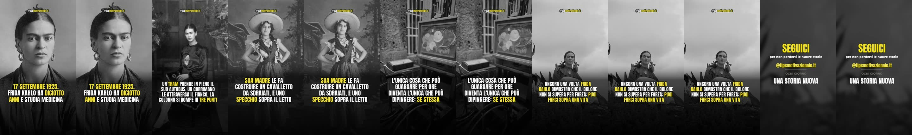

13:00
storia vera
Kahlo — specchio sul letto
17 settembre 1925. Frida Kahlo ha diciotto anni, studia medicina a Città del Messico e quel
TIPSMOTIVAZIONALE
10 reel in coda · fino a giovedi 10 settembre
19:00
oggi due · alle 13:00 e 19:00 · al massimo 100 minuti di ritardo
domani

Kahlo — specchio sul letto
17 settembre 1925. Frida Kahlo ha diciotto anni, studia medicina a Città del Messico e quel

Bartali — il bene non si dice
Nel 1938 Gino Bartali vince il Tour de France e in Italia diventa un simbolo.
lunedi 7 settembre
Kennedy — cinghia fra i denti
2 agosto 1943, isole Salomone. Il cacciatorpediniere giapponese Amagiri arriva nel buio a tutta velocità e

Caravaggio — in fuga
Nel 1606 Michelangelo Merisi, detto Caravaggio, e' il pittore piu' conteso di Roma.
martedi 8 settembre
Pele — la promessa al padre
Nel 1940, l'anno in cui Pelé nasce, suo padre Dondinho si spezza il ginocchio e perde

Dante — condannato al rogo
Nel 1300 Dante Alighieri e' uno dei priori di Firenze: la carica piu' alta della citta'.
mercoledi 9 settembre
Ford — due fallimenti
Nel 1901 un meccanico di Detroit vede chiudere la sua prima azienda di automobili: aveva costruito

Van — gogh un quadro venduto
In dieci anni Vincent van Gogh dipinse quasi novecento quadri. In vita ne vendette praticamente uno
giovedi 10 settembre
Mandela — cinque anni in piu
Nel gennaio del 1985 il presidente sudafricano offre a Nelson Mandela la libertà. Non è uno
Ferrari — il no della fiat
Aveva vent'anni e non aveva più nessuno.
Dopo l'ultimo la coda è finita. Il lavoro notturno ne produce quattro ogni notte, quindi non dovrebbe succedere — ma se il Mac resta spento più giorni ricevi un avviso quando ne restano due.